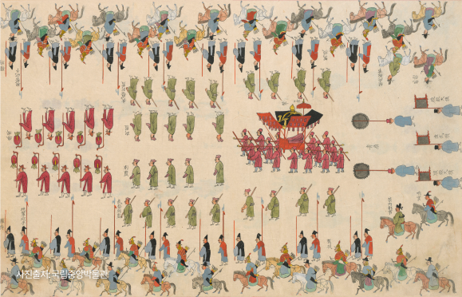
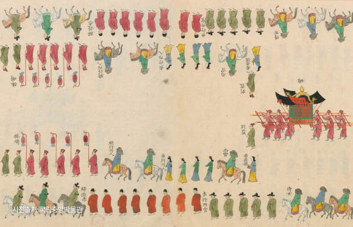

의식주(衣食住) 중 의복은 가장 으뜸이다. 우리는 수백, 수천 년 동안 주어진 환경에 맞춰 살아남는 데 필요한 옷을 만들었다.
현재의 대한민국에 터 잡은 사람들 또한 시대와 역사를 거쳐 수많은 옷을 만들고 입어왔다. 이 땅에 터 잡은 선사시대 조상들부터 삼국시대를 거쳐
고려·조선을 지나 현재 한국의 의복이 만들어지기까지 수많은 세월이 필요했다. 의복에 담긴 시대별 특징, 계급에 따른 의복 소재와 색깔의 차이,
치장을 위한 다양한 장신구까지. 우리나라의 역사와 함께 변화해온 한국의 의복에 얽힌 다양한 이야기를 담았다.
01 영조정순왕후가례도감의궤로 알아보는 조선시대 궁궐 안 사람들
1759년 5월~6월에 영조(英祖)가 오흥부원군(鰲興府院君) 김한구(金漢耉)의 딸을 계비(정순왕후(貞純王后)로 맞는 과정을 기록한 『영조정순왕후가례도감의궤(英祖貞純王后嘉禮都監儀軌)』 상·하 2책 중 하책에 수록된 반차도이다. 1757년(영조 33) 정성왕후 서씨(貞聖王后 徐氏)가 승하하고 삼년상이 지나자 왕실 가례의 예법인 육례(六禮)의 절차에 따라 계비를 맞았다. 이 반차도는 18세기 어람용 반차도의 높은 수준을 보여주는 동시에 19세기 친영 반차도 제작의 규례 역할을 한다는 점에서 중요하다.

영조정순왕후가례도감의궤 왕의 행진
조선 왕 조복
영조는 왕의 대례복을 입고 있다. 대례복은 조선의 왕이 제례나 가례 등 중요한 의례를 행할 때 면관과 함께 착용하는 복식 일습이다. 또한 왕권을 상징하는 법복으로, 국가의 길례, 가례, 흉례 등 다양한 성격의 의례에 착용하는 복식이다.

영조정순왕후가례도감의궤 왕비의 행진
조선 왕비 원삼
정순왕후는 조선의 왕비가 매일 문안, 종친 및 외명부 접견 등의 의례에 참석할 때 입는 복식인 소례복을 입고 있다. 왕비는 의식의 규모에 따라 치마, 저고리 위에 당의나 원삼을 착용한다.
02 세부 유물들